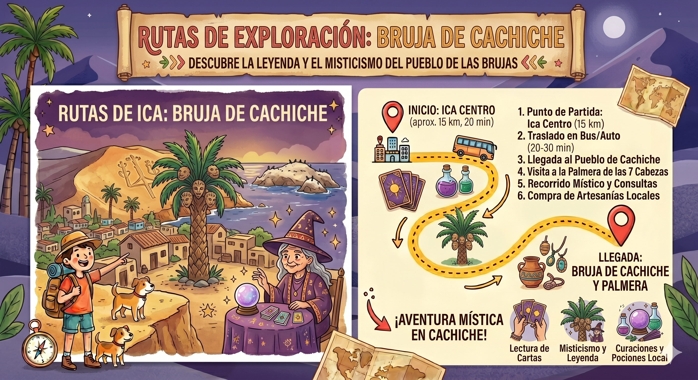

Tour Místico y Cultural
Adéntrate en el folclore iqueño. Un recorrido lleno de misticismo, leyendas urbanas y tradiciones ancestrales en el famoso pueblo de las brujas.
-
04:00 PM
Punto de Encuentro
Nos reuniremos en la Plaza de Armas de Ica. Abordaremos nuestra movilidad turística para dirigirnos al pintoresco pueblo de Cachiche.
-
04:30 PM
Parque Temático de las Brujas
Llegada al pueblo. Visitaremos el monumento a Julia Hernández Pecho mientras nuestro guía relata las historias que la hicieron leyenda.
-
05:15 PM
La Palmera de las 7 Cabezas
Nos dirigiremos a esta rareza de la naturaleza y conoceremos la escalofriante profecía de la séptima cabeza.
-
06:00 PM
Centro Esotérico y Artesanías
Tiempo libre para recorrer la plazuela, lectura de cartas (opcional) o compra de amuletos artesanales.
-
06:45 PM
Retorno a la Ciudad
Finalizado el recorrido mágico, subiremos nuevamente a la movilidad para retornar a la Plaza de Armas de Ica.
Vista de la Ruta
